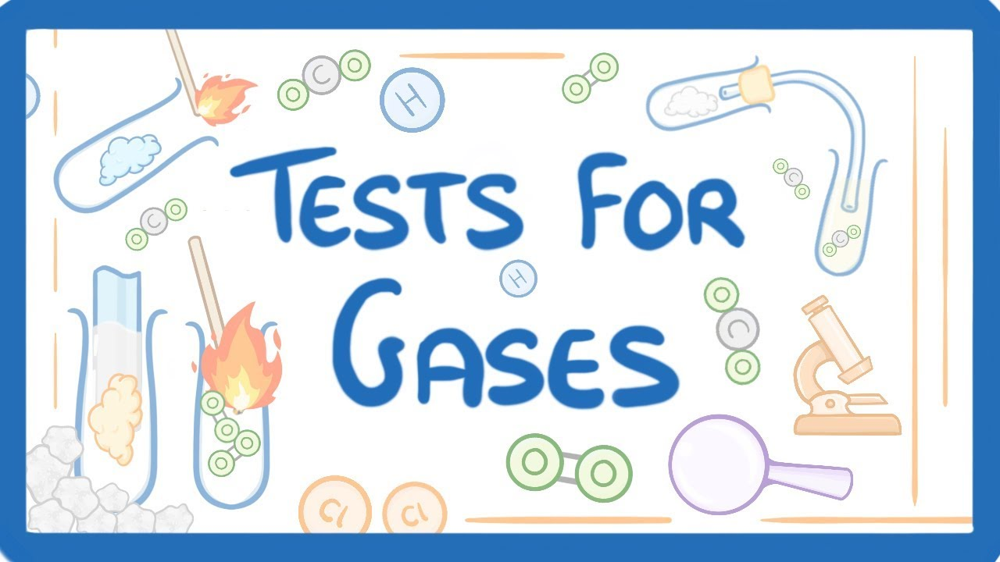
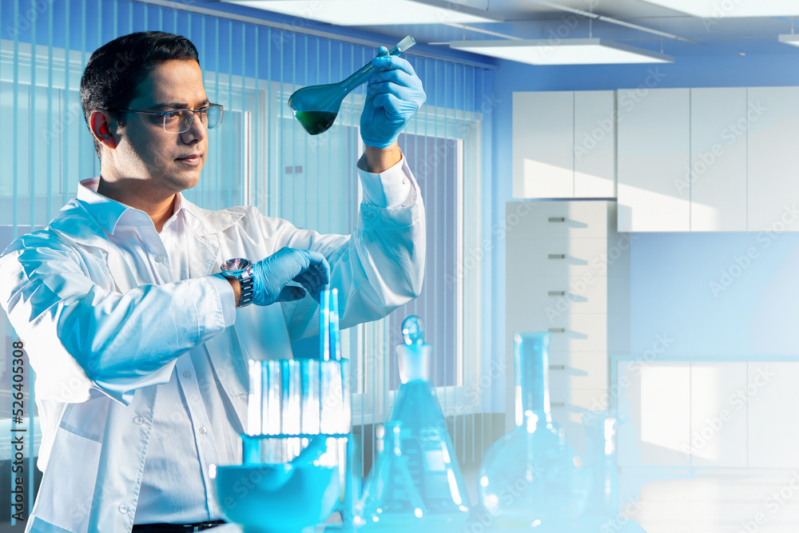
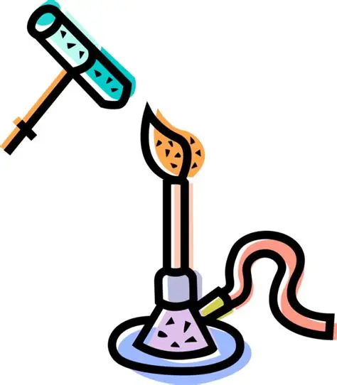
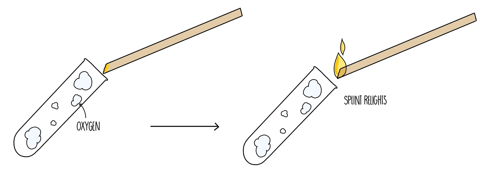
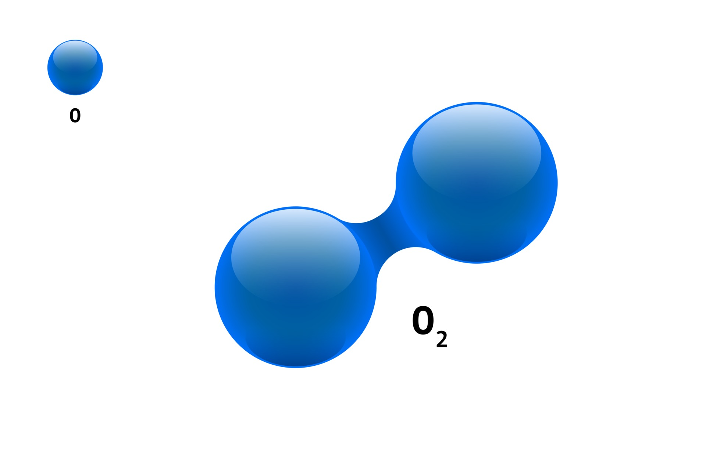
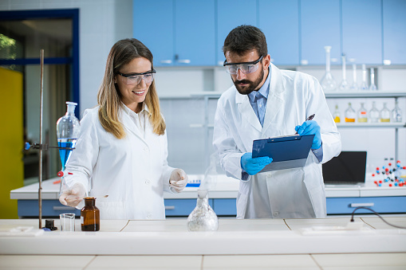
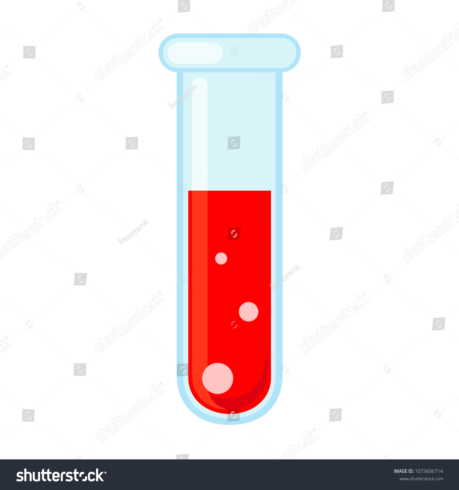
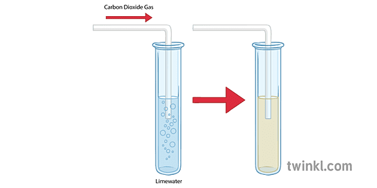
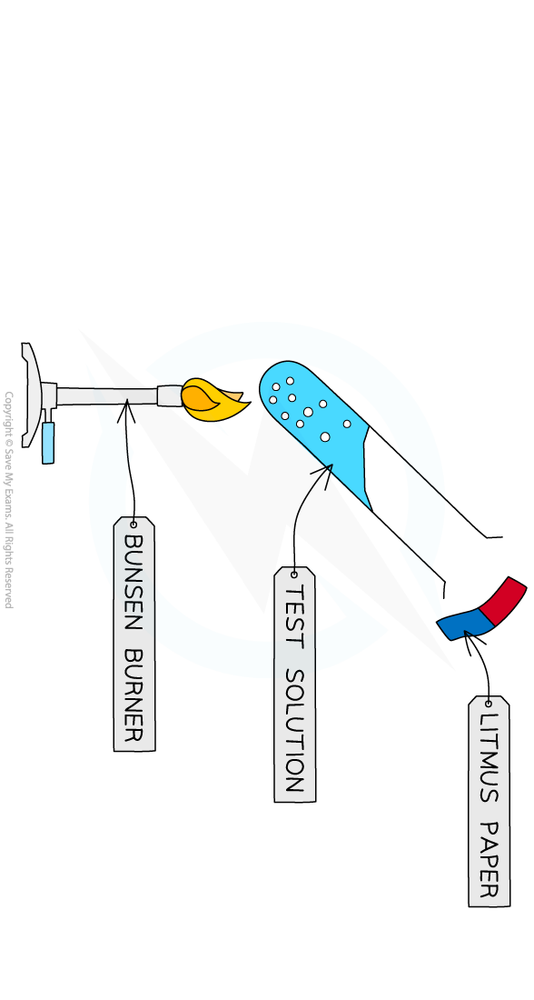
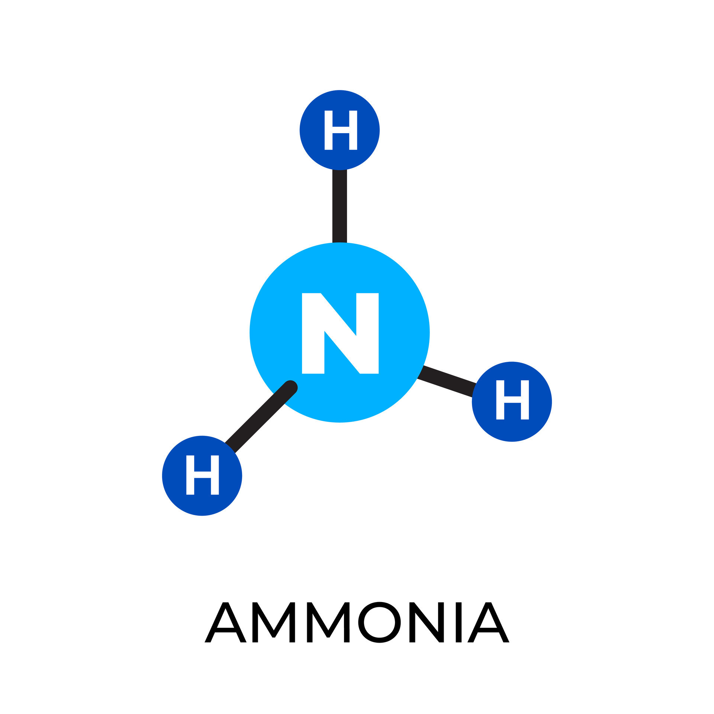

Testing of gases

why do we test for these gases?
Testing for gases help us better understand chemical reactions and processes.
For expample, when oxygen is present, it can indicate the presence of combustion or respiration processes.
This helps us identify and analyze the chemical present and what reaction takes place.
Some reactions can produce gases that might be toxic and invisable to the naked eye and testing gases can help to solve this safety.



short history for gas test
17th century: Scientists began to realize that air is made up of different gases instead of one single substance.
Early chemists such as Jan Baptist van Helmont, Joseph Black, Joseph Priestley, and Antoine Lavoisier studied gases like carbon dioxide,
oxygen, hydrogen, and ammonia.
18th century: Scientists discovered that each gas has unique chemical properties and developed simple tests to identify them.
Gas tests became standard laboratory methods and were widely used in schools and scientific research.
Today: Traditional gas tests include the glowing splint test and the limewater test
and damp red litmus paper test, are still used because they are simple, reliable, and effective.
oxygen test

oxygen is a colorless, odorless gas making it difficult to detect without proper testing equipment.
To test for oxygen, we can use a glowing splint. If the splint reignites, it indicates the presence of oxygen.
just remember to handle the splint with care and ensure it is completely extinguished before disposal.
and all safety equipment should be used when conducting gas tests.



history of oxygen test
Carl Wilhelm Scheele was the first scientist known to produce oxygen. Around 1772, he heated compounds
such as mercury oxide and potassium nitrate and collected a gas that supported burning much better than
ordinary air. He called this gas "fire air" because it made flames burn brighter. However, Scheele did not
publish his findings until 1777, so Joseph Priestley is often credited with the discovery of oxygen.
French chemist Antoine Lavoisier later proved that oxygen is a separate element and named it "oxygen".
Lavoisier also developed the first reliable method for testing oxygen using a glowing splint.
He also explained its important role in combustion and respiration, changing the understanding of chemistry
and laying the foundation for modern chemistry.
carbon dioxide test

carbon dioxide is a colorless, odorless gas making it difficult to detect without proper testing equipment.
To test for carbon dioxide, we can use limewater (calcium hydroxide solution). If the limewater turns milky or cloudy, it indicates the presence of carbon dioxide.
just remember to handle the limewater with care and ensure it is properly disposed of after testing.
and all safety equipment should be used when conducting gas tests.
The reaction between carbon dioxide and limewater produces calcium carbonate, which is insoluble in water and causes the milky appearance.
This test is commonly used in laboratories to confirm the presence of carbon dioxide.
It is important to note that the limewater is clear and looks like regular water so remember not to drink it.


history of carbon dioxide test
Jan Baptist van Helmont was one of the first scientists to recognize that different types of gases existed.
Around 1630, he observed that burning charcoal and fermenting grape juice produced an invisible gas that
was different from ordinary air.He called this gas "gas sylvestre", which is now known as carbon dioxide (CO₂). Van Helmont also
introduced the word "gas" into scientific language.Although he discovered the gas, he did not have a reliable method to identify it.
In 1754, Joseph Black developed a simple test for carbon dioxide using limewater (calcium hydroxide solution).
He found that when carbon dioxide was bubbled through limewater
it turned milky or cloudy, indicating the presence of carbon dioxide.
ammonia test

ammonia is a colorless gas with a pungent smell, making it relatively easy to detect.
To test for ammonia, we can use red litmus paper. If the paper turns blue, it indicates the presence of ammonia.
ammonia can be toxic if inhaled in large quantities, so proper ventilation and safety precautions should be taken when handling it.
remember to use only the red litmus paper for this test and damp the red litmus paper with water before use.
this will help ensure accurate results.

history of ammonia test
During the 18th century, chemists began studying gases produced by chemical reactions.
Joseph Priestley first prepared pure ammonia gas in 1774 by heating ammonium chloride with calcium hydroxide.
This experiment marked one of the earliest scientific investigations of ammonia as a distinct gas.
As Priestley studied the gas, he observed several unique properties. He found that it had a strong, sharp, and pungent smell that was unlike any other gas known at the time.
As chemistry developed during the 19th century, scientists discovered that ammonia gas changes damp red litmus paper to blue because it is alkaline.
This simple test became a standard method for detecting ammonia in laboratories and educational settings.
Today, the ammonia test is widely used in schools, research laboratories, and industries. It remains one of the most reliable and straightforward methods for detecting ammonia gas.
Gas Test Game
Welcome to the Gas Test Game!
Test your knowledge of gases tests by identifying the gases by testing them.
How to play:
1. Click on a test tool and click a flask to test it.
2. Use the test results to identify the gas.
3. Score points for correct answers!
🧪 Gas Detective
Pick a test tool, click a flask to test it, then guess the gas!
Selected tool: none
Flask 1
Flask 2
Flask 3
Run a test to see a clue...
What gas is it?
Score: 0